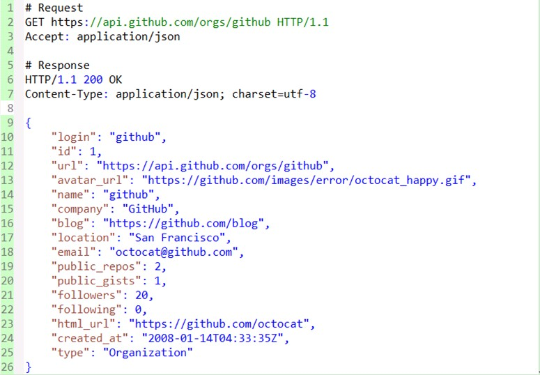
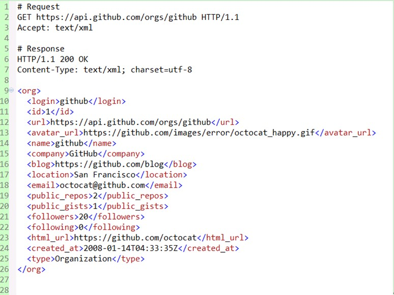
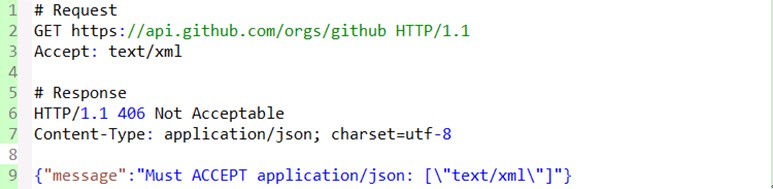

1. 什么是REST

REST全称是Representational State Transfer，中文意思是表述（编者注：通常译为表征）性状态转移。 它首次出现在2000年Roy Fielding的博士论文中，Roy Fielding是HTTP规范的主要编写者之一。 他在论文中提到："我这篇文章的写作目的，就是想在符合架构原理的前提下，理解和评估以网络为基础的应用软件的架构设计，得到一个功能强、性能好、适宜通信的架构。REST指的是一组架构约束条件和原则。" 如果一个架构符合REST的约束条件和原则，我们就称它为RESTful架构。
REST本身并没有创造新的技术、组件或服务，而隐藏在RESTful背后的理念就是使用Web的现有特征和能力， 更好地使用现有Web标准中的一些准则和约束。虽然REST本身受Web技术的影响很深， 但是理论上REST架构风格并不是绑定在HTTP上，只不过目前HTTP是唯一与REST相关的实例。 所以我们这里描述的REST也是通过HTTP实现的REST。
2. 理解RESTful
要理解RESTful架构，需要理解Representational State Transfer这个词组到底是什么意思，它的每一个词都有些什么涵义。
下面我们结合REST原则，围绕资源展开讨论，从资源的定义、获取、表述、关联、状态变迁等角度，列举一些关键概念并加以解释。
- 资源与URI
- 统一资源接口
- 资源的表述
- 资源的链接
- 状态的转移
2. 1 资源与URI
REST全称是表述性状态转移，那究竟指的是什么的表述? 其实指的就是资源。任何事物，只要有被引用到的必要，它就是一个资源。资源可以是实体(例如手机号码)，也可以只是一个抽象概念(例如价值) 。下面是一些资源的例子：
- 某用户的手机号码
- 某用户的个人信息
- 最多用户订购的GPRS套餐
- 两个产品之间的依赖关系
- 某用户可以办理的优惠套餐
- 某手机号码的潜在价值
要让一个资源可以被识别，需要有个唯一标识，在Web中这个唯一标识就是URI(Uniform Resource Identifier)。
URI既可以看成是资源的地址，也可以看成是资源的名称。如果某些信息没有使用URI来表示，那它就不能算是一个资源， 只能算是资源的一些信息而已。URI的设计应该遵循可寻址性原则，具有自描述性，需要在形式上给人以直觉上的关联。这里以github网站为例，给出一些还算不错的URI：
- https://github.com/git
- https://github.com/git/git
- https://github.com/git/git/blob/master/block-sha1/sha1.h
- https://github.com/git/git/commit/e3af72cdafab5993d18fae056f87e1d675913d08
- https://github.com/git/git/pulls
- https://github.com/git/git/pulls?state=closed
- https://github.com/git/git/compare/master…next
下面让我们来看看URI设计上的一些技巧:
- 使用_或-来让URI可读性更好
曾经Web上的URI都是冰冷的数字或者无意义的字符串，但现在越来越多的网站使用_或-来分隔一些单词，让URI看上去更为人性化。 例如国内比较出名的开源中国社区，它上面的新闻地址就采用这种风格， 如http://www.oschina.net/news/38119/oschina-translate-reward-plan。
- 使用/来表示资源的层级关系
例如上述/git/git/commit/e3af72cdafab5993d18fae056f87e1d675913d08就表示了一个多级的资源， 指的是git用户的git项目的某次提交记录，又例如/orders/2012/10可以用来表示2012年10月的订单记录。
- 使用?用来过滤资源
很多人只是把?简单的当做是参数的传递，很容易造成URI过于复杂、难以理解。可以把?用于对资源的过滤， 例如/git/git/pulls用来表示git项目的所有推入请求，而/pulls?state=closed用来表示git项目中已经关闭的推入请求， 这种URL通常对应的是一些特定条件的查询结果或算法运算结果。
- ,或;可以用来表示同级资源的关系
有时候我们需要表示同级资源的关系时，可以使用,或;来进行分割。例如哪天github可以比较某个文件在随意两次提交记录之间的差异，或许可以使用/git/git /block-sha1/sha1.h/compare/e3af72cdafab5993d18fae056f87e1d675913d08;bd63e61bdf38e872d5215c07b264dcc16e4febca作为URI。 不过，现在github是使用…来做这个事情的，例如/git/git/compare/master…next。
2. 2 统一资源接口
RESTful架构应该遵循统一接口原则，统一接口包含了一组受限的预定义的操作，不论什么样的资源，都是通过使用相同的接口进行资源的访问。接口应该使用标准的HTTP方法如GET，PUT和POST，并遵循这些方法的语义。
如果按照HTTP方法的语义来暴露资源，那么接口将会拥有安全性和幂等性的特性，例如GET和HEAD请求都是安全的， 无论请求多少次，都不会改变服务器状态。而GET、HEAD、PUT和DELETE请求都是幂等的，无论对资源操作多少次， 结果总是一样的，后面的请求并不会产生比第一次更多的影响。
下面列出了GET，DELETE，PUT和POST的典型用法:
GET
- 安全且幂等
- 获取表示
- 变更时获取表示（缓存）
- 200（OK） - 表示已在响应中发出
- 204（无内容） - 资源有空表示
- 301（Moved Permanently） - 资源的URI已被更新
- 303（See Other） - 其他（如，负载均衡）
- 304（not modified）- 资源未更改（缓存）
- 400 （bad request）- 指代坏请求（如，参数错误）
- 404 （not found）- 资源不存在
- 406 （not acceptable）- 服务端不支持所需表示
- 500 （internal server error）- 通用错误响应
- 503 （Service Unavailable）- 服务端当前无法处理请求
POST
- 不安全且不幂等
- 使用服务端管理的（自动产生）的实例号创建资源
- 创建子资源
- 部分更新资源
- 如果没有被修改，则不过更新资源（乐观锁）
- 200（OK）- 如果现有资源已被更改
- 201（created）- 如果新资源被创建
- 202（accepted）- 已接受处理请求但尚未完成（异步处理）
- 301（Moved Permanently）- 资源的URI被更新
- 303（See Other）- 其他（如，负载均衡）
- 400（bad request）- 指代坏请求
- 404 （not found）- 资源不存在
- 406 （not acceptable）- 服务端不支持所需表示
- 409 （conflict）- 通用冲突
- 412 （Precondition Failed）- 前置条件失败（如执行条件更新时的冲突）
- 415 （unsupported media type）- 接受到的表示不受支持
- 500 （internal server error）- 通用错误响应
- 503 （Service Unavailable）- 服务当前无法处理请求
PUT
- 不安全但幂等
- 用客户端管理的实例号创建一个资源
- 通过替换的方式更新资源
- 如果未被修改，则更新资源（乐观锁）
- 200 （OK）- 如果已存在资源被更改
- 201 （created）- 如果新资源被创建
- 301（Moved Permanently）- 资源的URI已更改
- 303 （See Other）- 其他（如，负载均衡）
- 400 （bad request）- 指代坏请求
- 404 （not found）- 资源不存在
- 406 （not acceptable）- 服务端不支持所需表示
- 409 （conflict）- 通用冲突
- 412 （Precondition Failed）- 前置条件失败（如执行条件更新时的冲突）
- 415 （unsupported media type）- 接受到的表示不受支持
- 500 （internal server error）- 通用错误响应
- 503 （Service Unavailable）- 服务当前无法处理请求
DELETE
- 不安全但幂等
- 删除资源
- 200 （OK）- 资源已被删除
- 301 （Moved Permanently）- 资源的URI已更改
- 303 （See Other）- 其他，如负载均衡
- 400 （bad request）- 指代坏请求
- 404 （not found）- 资源不存在
- 409 （conflict）- 通用冲突
- 500 （internal server error）- 通用错误响应
- 503 （Service Unavailable）- 服务端当前无法处理请求
下面我们来看一些实践中常见的问题:
- POST和PUT用于创建资源时有什么区别?
POST和PUT在创建资源的区别在于，所创建的资源的名称(URI)是否由客户端决定。 例如为我的博文增加一个java的分类，生成的路径就是分类名/categories/java，那么就可以采用PUT方法。不过很多人直接把POST、GET、PUT、DELETE直接对应上CRUD，例如在一个典型的rails实现的RESTful应用中就是这么做的。
我认为，这是因为rails默认使用服务端生成的ID作为URI的缘故，而不少人就是通过rails实践REST的，所以很容易造成这种误解。
- 客户端不一定都支持这些HTTP方法吧?
的确有这种情况，特别是一些比较古老的基于浏览器的客户端，只能支持GET和POST两种方法。
在实践上，客户端和服务端都可能需要做一些妥协。例如rails框架就支持通过隐藏参数_method=DELETE来传递真实的请求方法， 而像Backbone这样的客户端MVC框架则允许传递_method传输和设置X-HTTP-Method-Override头来规避这个问题。
- 统一接口是否意味着不能扩展带特殊语义的方法?
统一接口并不阻止你扩展方法，只要方法对资源的操作有着具体的、可识别的语义即可，并能够保持整个接口的统一性。
像WebDAV就对HTTP方法进行了扩展，增加了LOCK、UPLOCK等方法。而github的API则支持使用PATCH方法来进行issue的更新，例如:
PATCH /repos/:owner/:repo/issues/:number
不过，需要注意的是，像PATCH这种不是HTTP标准方法的，服务端需要考虑客户端是否能够支持的问题。
- 统一资源接口对URI有什么指导意义?
统一资源接口要求使用标准的HTTP方法对资源进行操作，所以URI只应该来表示资源的名称，而不应该包括资源的操作。
通俗来说，URI不应该使用动作来描述。例如，下面是一些不符合统一接口要求的URI:
- GET /getUser/1
- POST /createUser
- PUT /updateUser/1
- DELETE /deleteUser/1
如果GET请求增加计数器，这是否违反安全性?
安全性不代表请求不产生副作用，例如像很多API开发平台，都对请求流量做限制。像github，就会限制没有认证的请求每小时只能请求60次。
但客户端不是为了追求副作用而发出这些GET或HEAD请求的，产生副作用是服务端"自作主张"的。
另外，服务端在设计时，也不应该让副作用太大，因为客户端认为这些请求是不会产生副作用的。
- 直接忽视缓存可取吗?
即使你按各个动词的原本意图来使用它们，你仍可以轻易禁止缓存机制。 最简单的做法就是在你的HTTP响应里增加这样一个报头： Cache-control: no-cache。 但是，同时你也对失去了高效的缓存与再验证的支持(使用Etag等机制)。
对于客户端来说，在为一个REST式服务实现程序客户端时，也应该充分利用现有的缓存机制，以免每次都重新获取表示。
- 响应代码的处理有必要吗?
HTTP的响应代码可用于应付不同场合，正确使用这些状态代码意味着客户端与服务器可以在一个具备较丰富语义的层次上进行沟通。
例如，201（"Created"）响应代码表明已经创建了一个新的资源，其URI在Location响应报头里。
假如你不利用HTTP状态代码丰富的应用语义，那么你将错失提高重用性、增强互操作性和提升松耦合性的机会。
如果这些所谓的RESTful应用必须通过响应实体才能给出错误信息，那么SOAP就是这样的了，它就能够满足了。
2. 3 资源的表述
上面提到，客户端通过HTTP方法可以获取资源，是吧? 不，确切的说，客户端获取的只是资源的表述而已。 资源在外界的具体呈现，可以有多种表述(或成为表现、表示)形式，在客户端和服务端之间传送的也是资源的表述，而不是资源本身。 例如文本资源可以采用html、xml、json等格式，图片可以使用PNG或JPG展现出来。
资源的表述包括数据和描述数据的元数据，例如，HTTP头"Content-Type" 就是这样一个元数据属性。
那么客户端如何知道服务端提供哪种表述形式呢?
答案是可以通过HTTP内容协商，客户端可以通过Accept头请求一种特定格式的表述，服务端则通过Content-Type告诉客户端资源的表述形式。
以github为例，请求某组织资源的json格式的表述形式:

假如github也能够支持xml格式的表述格式，那么结果就是这样的:

下面我们来看一些实践上常见的设计:
在URI里边带上版本号
有些API在URI里边带上版本号，例如:
- http://api.example.com/1.0/foo
- http://api.example.com/1.2/foo
- http://api.example.com/2.0/foo
如果我们把版本号理解成资源的不同表述形式的话，就应该只是用一个URL，并通过Accept头部来区分，还是以github为例，它的Accept的完整格式是:application/vnd.github[.version].param[+json]
对于v3版本的话，就是Accept: application/vnd.github.v3。对于上面的例子，同理可以使用使用下面的头部:
- Accept: vnd.example-com.foo+json; version=1.0
- Accept: vnd.example-com.foo+json; version=1.2
- Accept: vnd.example-com.foo+json; version=2.0
使用URI后缀来区分表述格式
像rails框架，就支持使用/users.xml或/users.json来区分不同的格式。 这样的方式对于客户端来说，无疑是更为直观，但混淆了资源的名称和资源的表述形式。 我个人认为，还是应该优先使用内容协商来区分表述格式。
如何处理不支持的表述格式
当服务器不支持所请求的表述格式，那么应该怎么办？若服务器不支持，它应该返回一个HTTP 406响应，表示拒绝处理该请求。下面以github为例，展示了一个请求XML表述资源的结果：

2. 4 资源的链接
我们知道REST是使用标准的HTTP方法来操作资源的，但仅仅因此就理解成带CURD的Web数据库架构就太过于简单了。
这种反模式忽略了一个核心概念："超媒体即应用状态引擎（hypermedia as the engine of application state）"。 超媒体是什么?
当你浏览Web网页时，从一个连接跳到一个页面，再从另一个连接跳到另外一个页面，就是利用了超媒体的概念：把一个个把资源链接起来.
要达到这个目的，就要求在表述格式里边加入链接来引导客户端。在《RESTful Web Services》一书中，作者把这种具有链接的特性成为连通性。下面我们具体来看一些例子。
下面展示的是github获取某个组织下的项目列表的请求，可以看到在响应头里边增加Link头告诉客户端怎么访问下一页和最后一页的记录。 而在响应体里边，用url来链接项目所有者和项目地址。

又例如下面这个例子，创建订单后通过链接引导客户端如何去付款。

上面的例子展示了如何使用超媒体来增强资源的连通性。很多人在设计RESTful架构时，使用很多时间来寻找漂亮的URI，而忽略了超媒体。所以，应该多花一些时间来给资源的表述提供链接，而不是专注于"资源的CRUD"。
2. 5 状态的转移
有了上面的铺垫，再讨论REST里边的状态转移就会很容易理解了。
不过，我们先来讨论一下REST原则中的无状态通信原则。初看一下，好像自相矛盾了，既然无状态，何来状态转移一说?
其实，这里说的无状态通信原则，并不是说客户端应用不能有状态，而是指服务端不应该保存客户端状态。
2. 5.1 应用状态与资源状态
实际上，状态应该区分应用状态和资源状态，客户端负责维护应用状态，而服务端维护资源状态。
客户端与服务端的交互必须是无状态的，并在每一次请求中包含处理该请求所需的一切信息。
服务端不需要在请求间保留应用状态，只有在接受到实际请求的时候，服务端才会关注应用状态。
这种无状态通信原则，使得服务端和中介能够理解独立的请求和响应。
在多次请求中，同一客户端也不再需要依赖于同一服务器，方便实现高可扩展和高可用性的服务端。
但有时候我们会做出违反无状态通信原则的设计，例如利用Cookie跟踪某个服务端会话状态，常见的像J2EE里边的JSESSIONID。
这意味着，浏览器随各次请求发出去的Cookie是被用于构建会话状态的。
当然，如果Cookie保存的是一些服务器不依赖于会话状态即可验证的信息（比如认证令牌），这样的Cookie也是符合REST原则的。
2. 5.2 应用状态的转移
状态转移到这里已经很好理解了， "会话"状态不是作为资源状态保存在服务端的，而是被客户端作为应用状态进行跟踪的。客户端应用状态在服务端提供的超媒体的指引下发生变迁。服务端通过超媒体告诉客户端当前状态有哪些后续状态可以进入。
这些类似"下一页"之类的链接起的就是这种推进状态的作用——指引你如何从当前状态进入下一个可能的状态。
3. 总结
现在广东XXX版本、XXX等项目中均使用传统的RPC、SOAP方式的Web服务，而移动南方基地XXXX项目的后台， 虽然采用了JSON格式进行交互，但还是属于RPC风格的。本文从资源的定义、获取、表述、关联、状态变迁等角度， 试图快速理解RESTful架构背后的概念。RESTful架构与传统的RPC、SOAP等方式在理念上有很大的不同，希望本文能对各位理解REST有所帮助。


点我分享笔记
笔记需要是本篇文章的内容扩展！